에너지관리기사 (2012-05-20 기출문제)
1과목: 연소공학
1. 다음 기체연료에 대한 설명 중 틀린 것은?
- 연소조절 및 점화, 소화가 용이하다.
- 연료의 예열이 쉽고 전열효율이 좋다.
- 고온연소에 의한 국부가열의 염려가 크다.
- 적은 공기로 완전연소시킬 수 있으며 연소효율이 높다.
(정답률: 84%)

2. 압력이 0.1 MPa, 체적이 3 m3인 273.15 K의 공기가 이상적으로 단열압축되어 그 체적이 1/3으로 되었다. 엔탈피의 변화량은 약 몇 kJ인가? (단, 공기의 기체상수＝0.287 kJ/kgK, 비열비는 1.4이다.)
- 480
- 580
- 680
- 780
(정답률: 56%)
3. 중유 연소과정에서 발생하는 그을음의 주 원인은?
- 연료 중 미립탄소의 불완전연소 때문에 발생
- 연료 중 불순물의 연소 때문에 발생
- 연료 중 회분과 수분의 중합 때문에 발생
- 중유 중의 파라핀 성분 때문에 발생
(정답률: 83%)
4. 공기가 n이 1.25인 폴리트로픽 과정으로 500 kPa에서 300 kPa까지 압축하면 과정 간에 열과 온도는 어떻게 변하는가? (단, 공기의 비열비는 1.4, 정적비열은 0.718 kJ/kgㆍK이다.)
- 열을 방출하고 온도는 내려간다.
- 열을 흡열하고 온도는 내려간다.
- 열을 방출하고 온도는 올라간다.
- 열을 흡열하고 온도는 올라간다.
(정답률: 50%)
5. 수분이나 회분을 많이 함유한 저품위 탄을 사용할 수 있으며 구조가 간단하고 소요동력이 적게 드는 연소장치는?
- 슬래그탭식
- 클레이머식
- 사이크론식
- 각우식
(정답률: 82%)
6. 고체연료의 공업분석에서 고정탄소를 산출하는 식은?
- 고정탄소(%)＝100－[수분(%)＋회분(%)＋휘발분(%)]
- 고정탄소(%)＝100－[수분(%)＋회분(%)＋질소(%)]
- 고정탄소(%)＝100－[수분(%)＋회분(%)＋r황분(%)]
- 고정탄소(%)＝100－[수분(%)＋황분(%)＋휘발분(%)]
(정답률: 86%)
7. 다음 중 중유의 인화점은?
- 40~50℃ 이상
- 60~70℃ 이상
- 80~90℃ 이상
- 100~110℃ 이상
(정답률: 63%)
8. 체적비 CH4 94%, C2H6 4%, CO2 2%인 어떤 혼합기체 연료의 10℃, 3기압하에서의 고위 발열량은 약 얼마인가? (단, 20℃, 1기압에서 CH4 및 C2H6의 고위발열량은 각각 37,204 kJ/m3및 65,727kJ/m3이다.)
- 116,700 kJ/m3
- 116,700 kJ/mol
- 225,600 kJ/m3
- 225,600 kJ/mol
(정답률: 43%)
9. 고체 연료의 일반적인 특징을 옳게 설명한 것은?
- 완전연소가 가능하며 연소효율이 높다.
- 연료의 품질이 균일하다.
- 점화 및 소화가 쉽다.
- 주성분은 C, H, O이다.
(정답률: 79%)
10. 어떤 기체연료 1 Sm3의 고위발열량이 14,160 kcal/Sm3이고 질량이 2.59 kg이었다. 다음 중 이 기체는?
- 메탄
- 에탄
- 프로판
- 부탄
(정답률: 46%)
11. 연소효율은 실제의 연소에 의한 열량을 완전연소 했을 때의 열량으로 나눈 것으로 정의할 때, 실제의 연소에 의한 열량을 계산하는데 필요한 요소가 아닌 것은?
- 연소가스 유출 단면적
- 연소가스 밀도
- 연소가스 열량
- 연소가스 비열
(정답률: 65%)
12. 탄소의 발열량은 약 몇 kcal/kg인가?
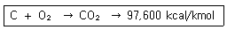
- 8,133
- 9,760
- 48,800
- 97,600
(정답률: 64%)
13. 여과집진장치의 효율을 높이기 위한 조건이 아닌 것은?
- 처리가스의 온도는 250 ℃를 넘지 않도록 한다.
- 고온가스를 냉각할 때는 산노점 이하를 유지하여야 한다.
- 미세입자포집을 위해서는 겉보기여과속도가 작아야 한다.
- 높은 집진율을 얻기 위해서는 간헐식 털어내기 방식을 선택한다.
(정답률: 79%)
14. 시간당 100 mol의 부탄(C4H10)과 5,000 mol의 공기를 완전 연소시키는 경우에 과잉공기 백분율은?
- 51.6 %
- 61.6 %
- 71.6 %
- 100 %
(정답률: 57%)
15. 다음 연료의 발열량에 대한 설명으로 옳지 않은 것은?
- 기체 연료는 그 성분으로부터 발열량을 계산할 수 있다.
- 발열량의 단위는 고체와 액체 연료는 단위중량당(통상 연료 kg당) 발열량으로 표시한다.
- 연료 중의 수소가 연소하여 생긴 수증기의 잠열을 포함할 때는 고위발열량, 혹은 총발열량이라 한다.
- 일반적으로 액체 연료는 비중이 크면 체적당 발열량은 감소하고, 중량당 발열량은 증가한다.
(정답률: 70%)
16. N2와 O2의 가스정수는 각각 30.26 kgfㆍ/kgㆍ, 26.49 kgfㆍ/kgㆍ 이다. N2가 70 %인 N2와 O2의 혼합가스의 가스정수는 얼마인가?
- 19.24
- 23.24
- 29.13
- 34.47
(정답률: 57%)
17. 다음 중 이론 공기량에 대하여 가장 바르게 설명한 것은?
- 완전연소에 필요한 1차 공기량이다.
- 완전연소에 필요한 2차 공기량이다.
- 완전연소에 필요한 최대 공기량이다.
- 완전연소에 필요한 최소 공기량이다.
(정답률: 87%)
18. 연돌에서의 배기가스 분석결과 CO2 14.2 %, O2 4.5 %, CO 0 %일 때 [CO2]max(%)는?
- 10.5
- 15.5
- 18.0
- 20.5
(정답률: 67%)
19. 보일러의 연소가스를 분석하는 주된 이유는?
- 연료사용량을 알기 위하여
- 매연의 성분을 알기 위하여
- 발열량을 알기 위하여
- 과잉 공기비를 알기 위하여
(정답률: 72%)
20. 메탄올(CH3OH) 1 kg을 완전연소 하는데 필요한 이론공기량(Sm3)은 약 얼마인가?
- 1.67
- 8.89
- 5.00
- 152.4
(정답률: 48%)
2과목: 열역학
21. 110 kPa, 20 ℃의 공기가 정압과정으로 온도가 50 ℃ 상승한 다음, 등온과정으로 압력이 반으로 줄어들었다. 최종 비체적은 최초 비체적의 약 몇 배인가?
- 0.585
- 1.17
- 1.71
- 2.34
(정답률: 31%)
22. 디젤 사이클 과정에 대한 설명 중 잘못된 것은?
- 효율은 압축비만의 함수이다.
- 일정한 압력에서 열공급을 한다.
- 일정체적에서 열을 방출한다.
- 등엔트로피 압축과정이 있다.
(정답률: 70%)
23. 카르노 사이클을 이루는 네 개의 가역과정이 아닌 것은?
- 가역 단열팽창
- 가역 단열압축
- 가역 등온압축
- 가역 등압팽창
(정답률: 79%)
24. 이상기체와 실제기체를 진공 속으로 단열팽창시킨다. 이 과정으로 온도는 어떻게 변화되겠는가?
- 이상기체의 온도는 변하지 않고, 실제기체의 온도는 변화된다.
- 이상기체의 온도는 상승하고 실제기체의 온도는 내려간다.
- 이상기체의 온도는 내려가고 실제기체의 온도는 상승한다.
- 이상기체와 실제기체의 온도가 모두 내려간다.
(정답률: 64%)
25. 열펌프(Heat Pump) 사이클에 대한 성능계수(COP)는 다음 중 어느 것을 입력 일(Work Input)로 나누어 준 것인가?
- 저온부 압력
- 고온부 온도
- 고온부 방출열
- 저온부 부피
(정답률: 83%)
26. 엔탈피는 내부에너지와 무엇을 더한 것인가?
- 엑서지
- 엔트로피
- 유동일
- 잠열
(정답률: 69%)
27. 온도가 800 K이고 질량이 10 kg인 구리를 온도 290 K인 100 kg의 물속에 넣었을 때 이 계 전체의 엔트로피 변화는 몇 kJ/K인가? (단, 구리와 물의 비열은 각각 0.398 kJ/kgㆍ, 4.185 kJ/kgㆍK 이고, 물은 단열된 용기에 담겨있다.)
- －3.973
- 2.897
- 4.424
- 6.870
(정답률: 55%)
28. 실내의 기압계는 1.013 bar를 지시하고 있다. 진공도가 20 %인 용기 내의 절대 압력은 몇 kPa인가?
- 20.26
- 64.72
- 81.04
- 121.56
(정답률: 48%)
29. 그림의 압력 P에서 물 1 kg이 압축액 1의 상태로부터 과열증기 4의 상태까지 가열되고 있다. 흡수한 전체 열량 중 과열에 소요된 열량을 표시하는 면적을 옳게 나타낸 것은?
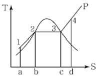
- 12 ba
- 23 cb
- 34 dc
- 123 ca
(정답률: 69%)
30. 랭킨 사이클로 작동되는 증기원동소에 500℃, 60 kgf/cm2의 증기가 공급되고 응축기 압력은 0.5kgf/cm2일 때 이론열효율은 몇 %인가? (단, 터빈입구 엔탈피 h3는 820.6 kcal/kg, 터빈출구 엔탈피 h4는 508.4 kcal/kg, 급수펌프 입구 엔탈피(응축기 출구) h1은 32.55 kcal/kg, 0.5 kgf/cm2에서 급수의 비체적은 0.01 m3/kg이다.)
- 28.6
- 38.5
- 45.4
- 49.9
(정답률: 46%)
31. 27℃, 100 kPa에 있는 이상기체 1 kg을 1 MPa까지 가역단열압축 하였다. 이때 소요된 일의 크기는 몇 kJ인가? (단, 이 기체의 비열비는 1.4, 기체상수는 0.287 kJ/kgㆍK이다.)
- 100
- 200
- 300
- 400
(정답률: 47%)
32. 800 kPa의 포화증기에서 물의 포화온도는 169.61℃, 포화수의 비엔탈피는 717 kJ/kg, 포화증기의 비엔탈피는 2,765 kJ/kg이다. 800 kPa에서 물의 포화액이 포화증기로 변하는 과정의 엔트로피 증가량은 약 몇 kJ/kgㆍK 인가?
- 1.38
- 2.54
- 3.31
- 4.63
(정답률: 40%)
33. 카르노(Carnot)사이클에 관한 설명으로 옳은 것은?
- 효율이 카르노사이클보다 더 높은 사이클이 있다.
- 과정 중에 등엔트로피 과정이 있다.
- 카르노사이클은 외부에서 열을 받고 일을 하지만 열을 방출하지는 않는다.
- 외부와의 열교환 과정은 유한 온도차에 의한 열전달을 통해 이루어진다.
(정답률: 62%)
34. 101.3 kPa에서 건구온도 20℃, 상대습도 55%인 습공기에 대한 절대습도는 몇 kg/kg인가? (단, 20 ℃에서 수증기의 포화압력은 2.24 kPa이다.)
- 0.0066
- 0.0077
- 0.0088
- 0.0099
(정답률: 56%)
35. 증기압축 냉동사이클에서 응축온도는 동일하고 증발온도가 다음과 같을 때 성능계수가 가장 큰 것은?
- －20℃
- －25℃
- －30℃
- －40℃
(정답률: 69%)
36. 기체 2 kg을 압력이 일정한 과정으로 50℃에서 150℃로 가열할 때, 필요한 열량은 몇 kJ인가? (단, 이 기체의 정적비열은 3.1 kJ/kgㆍ이고, 기체상수는 2.1 kJ/kgㆍ K이다.)
- 210
- 310
- 620
- 1,040
(정답률: 49%)
37. 2.4 MPa, 450℃인 과열증기를 160 kPa가 될 때까지 단열적으로 분출시킬 때, 출구속도는 1,060m/s 이었다. 속도 계수는 얼마인가? (단, 초속은 무시하고 입구와 출구 엔탈피는 각각 h1＝3,350kJ/kg, h2＝2,692 kJ/kg이다.)
- 0.225
- 0.543
- 0.769
- 0.924
(정답률: 42%)
38. 온도 30℃, 압력 350 kPa에서 비체적이 0.449 m3/kg인 이상기체의 기체상수는 몇 kJ/kgㆍ인가?
- 0.143
- 0.287
- 0.518
- 2.077
(정답률: 54%)
39. 다음 h-s 선도를 이용하여 재열 랭킨(Ranking)사이클의 효율을 바르게 표시한 것은?
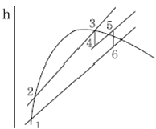
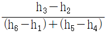
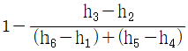
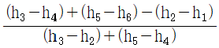
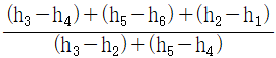
(정답률: 50%)
40. 가스 터빈에 의한 발전기에서 발전기 출력이 14,070 kW, 열교환기 입구가스온도는 470℃, 출구 가스온도는 170℃이고 열효율은 22%이다. 만약 저위발열량이 40,000kJ/kg인 C 중유를 연료로 사용한다면 C 중유의 소요량은 몇 kg/h인가?
- 279
- 752
- 4,752
- 5,756
(정답률: 33%)
3과목: 계측방법
41. 다음 중 적분동작(I동작)을 가장 바르게 설명한 것은?
- 출력변화의 속도가 편차에 비례하는 동작
- 출력변화가 편차의 제곱근에 비례하는 동작
- 출력변화가 편차의 제곱근에 반비례하는 동작
- 조작량이 동작신호의 값을 경계로 완전 개폐되는 동작
(정답률: 67%)
42. 계측기의 성능을 나타내는 용어로서 가장 거리가 먼 것은?
- 정도
- 감도
- 정밀도
- 편차
(정답률: 58%)
43. 비접촉식 온도측정 방법 중 가장 정확한 측정을 할 수 있으나 기록, 경보, 자동제어가 불가능한 단점이 있는 온도계는?
- 압력식온도계
- 방사온도계
- 열전온도계
- 광고온계
(정답률: 77%)
44. 물탱크에서 수두높이가 10 m, 오리피스의 지름이 10 cm일 때 오리피스의 유량(Q)은 약 몇 m3/s인가?
- 0.11 m3/s
- 0.15 m3/s
- 0.24 m3/s
- 0.52 m3/s
(정답률: 44%)
45. 부르동관 압력계에서 부르동관의 재질로서 저압용으로 사용하는 것은?
- 인발관
- 석영
- 니켈강
- 스테인리스강
(정답률: 48%)
46. 압력 측정범위가 0.1~1,000 kPa 정도인 탄성식 압력계로서 진공압 및 차압 측정용으로 주로 사용되는 것은?
- 벨로우즈식
- 부르동관식
- 금속 격막식
- 비금속 격막식
(정답률: 55%)
47. 정전 용량식 액면계의 특징에 대한 설명 중 틀린 것은?
- 측정범위가 넓다.
- 구조가 간단하고 보수가 용이하다.
- 유전율이 온도에 따라 변화되는 곳에도 사용할 수 있다.
- 습기가 있거나 전극에 피측정체를 부착하는 곳에는 부적당하다.
(정답률: 60%)
48. 다음 중 2개의 수은 온도계를 사용하는 습도계는?
- 모발 습도계
- 건습구 습도계
- 냉각식 습도계
- 건도계
(정답률: 84%)
49. 기전력을 이용한 것으로서 응답이 빠르고 급격히 변화하는 압력의 측정에 적당한 압력계는?
- 스트레인게이지(Strain Gauge)형
- 포텐시오메트릭(Potentiometric)형
- 캐피시탄스(Capacitance)형
- 피에조 일렉트릭(Piezoelectric)형
(정답률: 67%)
50. 벤투리관(Venturi Tube)에서 얻은 압력차 ΔP와 흐르는 유체의 체적유량 W(m3/s)와의 관계는? (단, k는 정수, r은 비중량을 나타낸다.)
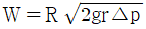
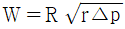
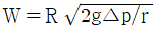
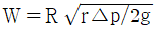
(정답률: 77%)
51. 피토관에 대한 설명으로 틀린 것은?
- 5 m/s 이하의 기체에서는 적용할 수 없다.
- Dust나 Mist가 많은 유체에는 부적당하다.
- 피토관의 머리 부분은 유체의 방향에 대하여 수직으로 부착한다.
- 흐름에 대하여 충분한 강도를 가져야 한다.
(정답률: 61%)
52. 다음 중 온도의 계량단위는?
- 보조단위
- 유도단위
- 특수단위
- 기본단위
(정답률: 87%)
53. 폐(閉)루프를 형성하여 출력측의 신호를 입력측에 되돌리는 제어를 의미하는 것은?
- 시퀀스
- 뱅뱅
- 피드백
- 리셋
(정답률: 85%)
54. 다음 [그림]은 피드백 제어계의 구성을 나타낸 것이다. ( )안에 가장 적절한 것은?
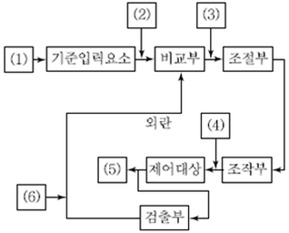
- (1)조작량 (2)동작신호 (3)목표치 (4)기준입력신호 (5)제어편차 (6)제어량
- (1)목표치 (2)기준입력신호 (3)동작신호 (4)조작량 (5)제어량 (6)주피드백 신호
- (1)동작신호 (2)오프셋 (3)조작량 (4)목표치 (5)제어량 (6)설정신호
- (1)목표치 (2)설정신호 (3)동작신호 (4)오프셋 (5)제어량 (6)주피드백 신호
(정답률: 74%)
55. 가스크로마토그래피법에서 사용되는 검출기 중 물에 대하여 감도를 나타내지 않기 때문에 자연수 중에 들어있는 오염물질을 검출하는데 유용한 검출기는?
- 불꽃이온화검출기
- 열전도도검출기
- 전자포획검출기
- 원자방출검출기
(정답률: 73%)
56. 수은 온도계의 상용 온도 범위는 얼마인가?
- －60 ℃~200℃
- －35 ℃~350 ℃
- －15 ℃~300℃
- 0 ℃~400 ℃
(정답률: 63%)
57. 가스크로마토그래피(GC)는 다음 중 어떤 원리를 응용한 것인가?
- 증발
- 증류
- 건조
- 흡착
(정답률: 80%)
58. 액체와 고체연료의 열량을 측정하는 열량계의 종류로 맞는 것은?
- 봄브식
- 융커스식
- 글리브랜드식
- 타그식
(정답률: 75%)
59. U자관 압력계에 대한 설명으로 틀린 것은?
- 주로 통풍력을 측정하는데 사용된다.
- 정밀측정에 주로 사용된다.
- 수은, 물, 기름 등을 넣어 한쪽 또는 양쪽 끝에 측정 압력을 도입한다.
- 크기는 특수한 용도를 제외하고 2 m 이내의 것이 사용된다.
(정답률: 56%)
60. 백금 측온 저항체 온도계에서 표준 측온 저항체로 주로 사용되는 것은? (단, 0℃ 기준이다.)
- 0.1Ω
- 10Ω
- 100Ω
- 1,000 Ω
(정답률: 71%)
4과목: 열설비재료 및 관계법규
61. 열처리로의 구조에 따른 분류가 아닌 것은?
- 상형로
- 대차로
- 진공로
- 회전로
(정답률: 50%)
62. 철금속가열로는 정격용량이 얼마를 초과하는 경우에 검사 대상기기에 해당되는가?
- 0.48 MW
- 0.58 MW
- 0.68 MW
- 0.78 MW
(정답률: 69%)
63. 지식경제부장관은 에너지수급 안정을 위한 조치를 하고자 할 때에는 그 사유, 기간 및 대상자 등을 정하여 그 조치예정일 며칠 이전에 예고하여야 하는가?
- 5일
- 7일
- 10일
- 15일
(정답률: 62%)
64. 셔틀요(Shuttle Kiln)의 특징에 대한 설명으로 가장 거리가 먼 것은?
- 가마의 보유열보다 대차의 보유열이 열 절약의 요인이 된다.
- 급냉파가 생기지 않을 정도의 고온에서 제품을 꺼낸다.
- 가마 1개당 2대 이상의 대차가 있어야 한다.
- 가마의 보유열이 주로 제품의 예열에 쓰인다.
(정답률: 49%)
65. 85℃의 물 120 kg의 온탕에 10℃의 물 140kg을 혼합하면 약 몇℃의 물이 되는가?
- 44.6
- 56.6
- 66.9
- 70.0
(정답률: 54%)
66. 크롬벽돌이나 크롬-마그벽돌이 고온에서 산화철을 흡수하여 표면이 부풀어 오르고 떨어져 나가는 현상은?
- 버스팅
- 큐어링
- 슬래킹
- 스폴링
(정답률: 80%)
67. 에너지사용계획을 수립하여 지식경제부장관에게 제출하여야 하는 민간사업주관자는 연간 얼마 이상의 연료 및 열을 사용하는 시설을 설치하는 자로 정해져 있는가?
- 2,500티오이
- 5,000티오이
- 10,000티오이
- 25,000티오이
(정답률: 67%)
68. [그림]의 균열로에서 리큐퍼레이터는 어느 곳인가?
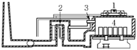
- 1
- 2
- 3
- 4
(정답률: 68%)
69. 냉난방온도의 제한온도를 정하는 기준 중 난방온도는 몇 ℃ 이하로 정해져 있는가?
- 18
- 20
- 22
- 26
(정답률: 75%)
70. 다음 ( ) 안에 알맞은 것은?
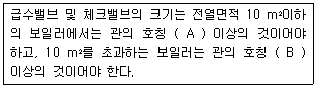
- A：5A, B：10 A
- A：10 A, B：15 A
- A：15A, B：20 A
- A：20 A, B：30 A
(정답률: 80%)
71. 공단이사장 또는 검사기관의 장이 검사를 받는 자에게 그 검사의 종류에 따라 필요한 사항에 대한 조치를 하게 할 수 있는 사항이 아닌 것은?
- 검사수수료의 준비
- 기계적 시험의 준비
- 운전성능 측정의 준비
- 검사대상기기조종자에게 검사시 참여토록 조치
(정답률: 80%)
72. 다음 중 제강로가 아닌 것은?
- 고로
- 전로
- 평로
- 전기로
(정답률: 73%)
73. 효율기자재의 제조업자는 효율관리시험기관으로부터 측정 결과를 통보받은 날로부터 며칠 이내에 그 측정결과를 에너지관리공단에 신고하여야 하는가?(관련 규정 개정전 문제로 여기서는 기존 정답인 3번을 누르면 정답 처리됩니다. 개정된 내용은 해설을 참고하세요.)
- 15일
- 30일
- 60일
- 90일
(정답률: 58%)
74. 에너지 총조사는 몇 년을 주기로 실시하는가?
- 2년
- 3년
- 5년
- 7년
(정답률: 76%)
75. 설치 후 3년이 지난 보일러로서 설치장소 변경검사를 받은 보일러는 검사 후 얼마 이내에 운전성능검사를 받아야 하는가?
- 7일 이내
- 15일 이내
- 1개월 이내
- 3개월 이내
(정답률: 60%)
76. 내화물이 가져야 할 물리, 화학적 특성을 설명한 것이다. 거리가 가장 먼 것은?
- 사용온도에 충분히 견디는 강도가 있을 것
- 급격한 온도 변화에 견딜 것
- 팽창, 수축이 적을 것
- 열전도율이 단열재 이하로 작을 것
(정답률: 77%)
77. 버터플라이 밸브(Butterfly Valve)의 특징에 대한 설명으로 옳지 않은 것은?
- 90° 회전으로 개폐가 가능하다.
- 유량조절이 가능하다.
- 완전 열림 시 유체저항이 크다.
- 개구경의 관로에 적용되며 조름밸브(Throttle Valve)로 사용된다.
(정답률: 72%)
78. 에너지저장시설의 보유 또는 저장의무의 부과시 정당한 사유 없이 이를 거부하거나 이행하지 아니한 자에 대한 벌칙 기준은?
- 500만원 이하로 벌금
- 1천만원 이하의 벌금
- 1년 이하의 징역 또는 1천만원 이하의 벌금
- 2년 이하의 징역 또는 2천만원 이하의 벌금
(정답률: 41%)
79. 최고안전사용온도가 600 ℃ 이상의 고온용 무기질 보온재는?
- 펄라이트(Pearlite)
- 폼 유리(Foam Glass)
- 석연보온재
- 규조토
(정답률: 80%)
80. 배관의 경제적 보온 두께 산정 시 고려대상으로 가장 거리가 먼 것은?
- 열량가격
- 배관공사비
- 감가상각년수
- 연간사용시간
(정답률: 70%)
5과목: 열설비설계
81. 보일러를 옥내에 설치하는 경우에 대한 설명으로 틀린 것은?
- 불연성 물질의 격벽으로 구분된 장소에 설치한다.
- 보일러 동체 최상부로부터 천정, 배관 등 보일러상부에 있는 구조물까지의 거리는 0.3 m 이상으로 한다.
- 연도의 외측으로부터 0.3 m 이내에 있는 가연성 물체에 대하여는 금속 이외의 불연성 재료로 피복한다.
- 연료를 저장할 때에는 소형보일러의 경우 보일러 외측으로부터 1 m 이상 거리를 두거나 반격벽으로 할 수 있다.
(정답률: 77%)
82. 내, 외경이 각각 0.16 m, 0.166 m, 길이가 30 m인 강관으로 포화증기(170℃)를 이송하고자 한다. 강관 둘레에 두께 5 cm의 마그네시아(k＝0.06 kcal/mㆍㆍhㆍ℃) 피복을 하였더니 피복 면온도는 40℃가 되었다. 이때 피복을 통한 열 손실은 약 몇 kcal/h 인가? (단, 강관의 외경 온도는 증기 온도와 동일하다고 가정한다.)
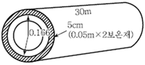
- 1,620.3
- 1,830.7
- 3,118.2
- 3,971.7
(정답률: 33%)
83. 연소가스량이 1,500 m3/min이고, 송풍기에 의한 압력수두가 10 mmH2O, 송풍기 효율이 0.6인 경우 송풍기 소요동력은 약 몇 PS 인가?
- 2.23
- 5.56
- 8.56
- 10.23
(정답률: 50%)
84. 다음 그림과 같이 길이가 L인 원통 벽을 전도에 의한 전열량(q)은 아래 식으로 나타낼 수 있다. q＝k Ac(단, k＝원통벽의 열전도도이다.) 위 식 중의 Ac를 그림에 주어진 r0, r1, L 값으로 표시하면?
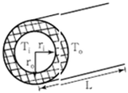
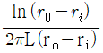
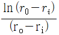
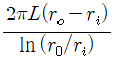
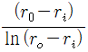
(정답률: 60%)
85. 관 스테이를 용접으로 부착하는 경우에 대한 설명으로 옳은 것은?
- 용접의 다리길이는 10 mm 이상으로 한다.
- 스테이의 끝은 판의 외면보다 안쪽에 있어야 한다.
- 관 스테이의 두께는 4 mm 이상으로 한다.
- 스테이의 끝은 화염에 접촉하는 판의 바깥으로 5 mm를 초과하여 돌출해서는 안된다.
(정답률: 61%)
86. 노통연관 보일러의 노통 바깥면과 이것에 가장 가까운 연관의 면과는 몇 mm 이상의 틈새를 두어야 하는가?
- 30
- 50
- 60
- 100
(정답률: 65%)
87. 원통 보일러의 노통은 주로 어떤 열응력을 받는가?
- 압축 응력
- 인장 응력
- 굽힘 응력
- 전단 응력
(정답률: 68%)
88. 다음 중 연질스케일을 생성시킬 수 있는 성분이 아닌 것은?
- 탄산마그네슘
- 규산칼슘
- 산화철
- 탄산칼슘
(정답률: 46%)
89. 다음 무차원수에 대한 설명 중 틀린 것은?
- Nusselt수는 열전달계수와 관계가 있다.
- Prandtl수는 동점성계수와 관계가 있다.
- Reynolds수는 층류 및 난류와 관계가 있다.
- Stanton수는 확산계수와 관계가 있다.
(정답률: 62%)
90. 보일러의 형식에 따른 보일러의 명칭이 바르지 않게 짝지어진 것은?
- 노통식 원통보일러 - 코니시(Cornish) 보일러
- 노통연관식 원통보일러 - 라몬트(Lamont) 보일러
- 자연순환식 수관보일러 - 다꾸마(Takuma) 보일러
- 관류식 수관보일러 - 슐저(Sulzer) 보일러
(정답률: 63%)
91. 증발량 2 ton/h, 최고 사용압력 10 kg/cm2, 급수온도 20℃, 최대 증발율 25 kg/m2ㆍh인 원통 보일러에서 평균 증발율을 최대 증발율의 90%로 할 때 평균 증발량(kg/h)은?
- 1,200
- 1,500
- 1,800
- 2,100
(정답률: 55%)
92. 다음 중 열전도율이 가장 낮은 것은?
- 니켈
- 탄소강
- 스케일
- 그을음
(정답률: 84%)
93. 나사식 파이프 조인트에 대한 설명으로 옳은 것은?
- 소구경(小口徑)이고 저압의 파이프에 사용한다.
- 관로의 방향을 일정하게 할 때 사용한다.
- 저압, 대구경(大口徑)의 파이프에 사용한다.
- 파이프의 분기점에는 사용해서는 안된다.
(정답률: 63%)
94. 보일러에는 내부의 청소와 검사에 필요한 맨홀을 설치하여야 한다. 맨홀의 크기는 안지름 몇 mm 이상의 원형으로 하여야 하는가?
- 275
- 300
- 375
- 400
(정답률: 53%)
95. 물을 사용하는 설비에서 부식을 초래하는 인자가 아닌 것은?
- 용존산소
- 용존 탄산가스
- pH
- 실리카(SiO2)
(정답률: 86%)
96. 성적계수(COP)R가 5.2인 증기압축 냉동기의 1냉동톤당 이론압축기 구동마력(PS)은 약 얼마인가?
- 1
- 2
- 3
- 4
(정답률: 41%)
97. 최고사용압력이 0.1 MPa 이하인 주철제 압력용기의 수압시험은 몇 MPa으로 실시하여야 하는가?
- 0.12
- 0.15
- 0.2
- 0.25
(정답률: 60%)
98. 수증기관에 만곡관을 설치하는 주된 목적은?
- 증기관 속의 응결수를 배제하기 위하여
- 열팽창에 의한 관의 팽창작용을 허용하기 위하여
- 증기의 통과를 원활히 하고 급수의 양을 조절하기 위하여
- 강수량의 순환을 좋게 하고 급수량의 조절을 쉽게 하기 위하여
(정답률: 59%)
99. 두께가 3 mm인 탄소 강판으로 제조된 노벽에서 내측으로부터 외측으로 전열현상이 발생될 때의 열확산계수는 약 몇 m2/s인가? (단, K＝43 W/mㆍ℃, Cp＝0.473 kgㆍ℃, ρ＝7,800 kg/m3이다.)
- 1.17×10－5
- 1.17×10－2
- 2.23×10－5
- 2.23×10－2
(정답률: 32%)
100. 가스용 보일러의 배기가스 중 일산화탄소의 이산화탄소에 대한 비는 얼마 이하이어야 하는가?
- 0.001
- 0.002
- 0.003
- 0.0⑤
(정답률: 65%)